Legitimate Intervention Framework
A comprehensive empirical analysis of 130 documented interventions across the decentralized ecosystem, tracking $78.54B in total losses and $2.12B in preventable recoveries.
The Scale of the Threat
To understand the necessity of legitimate intervention, we must first quantify the threat landscape. Since 2014, the ecosystem has lost over $80 billion to exploits, with a clear distinction between systemic failures and preventable technical exploits.
01. Annual Exploit Losses
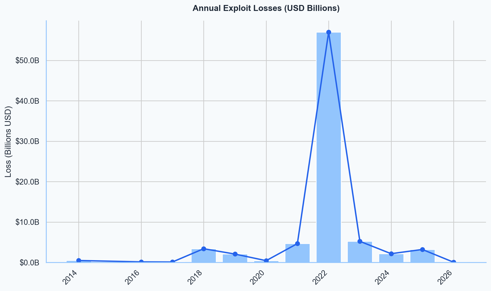
Key Insight: The 2022 catastrophe peaked at $58.06B, driven by Terra/Luna ($40B) and FTX ($8B). Following a market reset in 2023-24, losses are resurging in 2025 ($3.76B), indicating an active threat landscape.
04. LIF Addressable Market
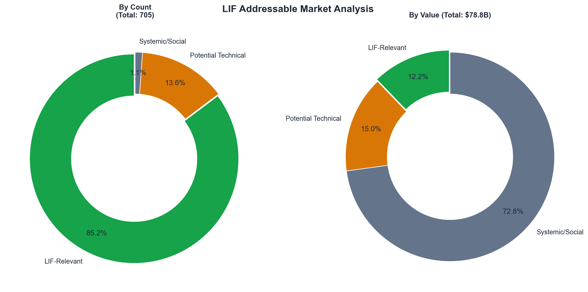
Key Insight: While systemic failures account for ~71% of total value lost, LIF-relevant technical exploits represent 59.1% of all incident count. The framework targets this "everyday" technical risk ($9.60B addressable) rather than rare black swans.
09. Distribution by Vector
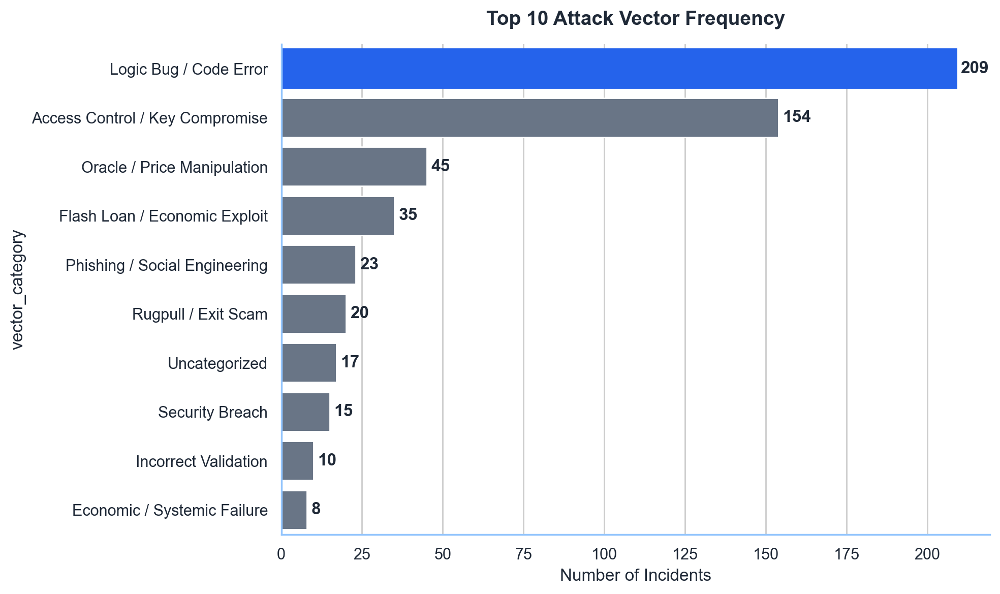
Key Insight: Logic Bugs (231) and Key Compromises (154) are the most frequent issues, accounting for >50% of cases. These top categories are technically addressable via pauses and blacklists.
15. Timeline Heatmap
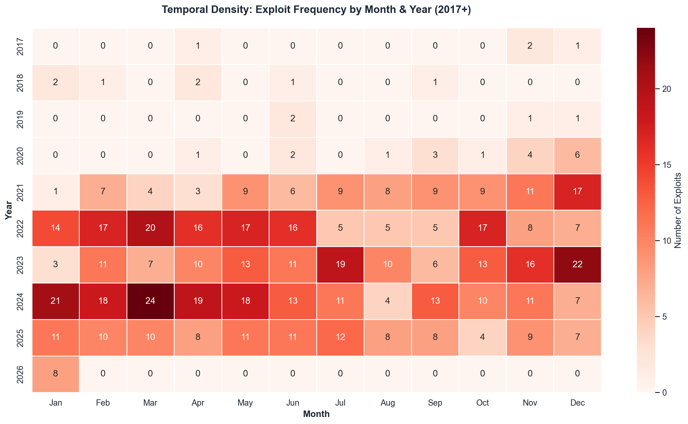
The "Red Wall": 2024 represents a structural shift with sustained double-digit incidents monthly. The market moved from "episodic" hacks to "industrial" continuous campaigns. March 2024 remains the absolute peak with 25 incidents.
The State of Intervention
Despite the "code covers law" ethos, intervention is already a reality. We have documented 120 unique intervention events where specialized authorities stepped in to prevent loss.
| Authority Type | Definition | Speed Profile | Examples |
|---|---|---|---|
| Signer Set | Small multisig (e.g., 2/3, 5/9) with admin keys. | Fast (< 4h) | Yearn, Optimism Multisig |
| Delegated Body | Elected Safety Council or Security DAO. | Medium (4-24h) | Arbitrum Security Council, Aave Guardian |
| Governance | Full token-holder on-chain vote. | Slow (> 24h) | Compound, Uniswap Gov |
18. Intervention Timeline
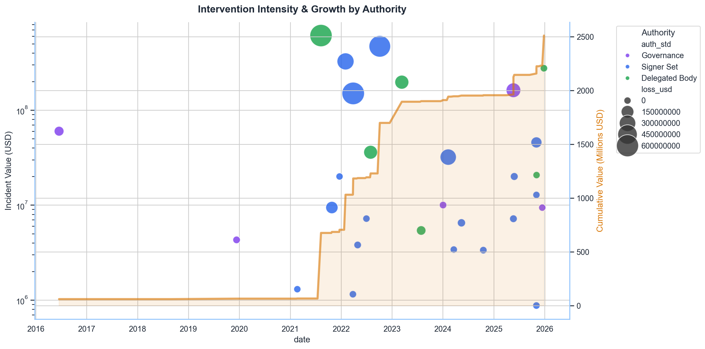
Cumulative Defense: $1.35B in addressable incidents accumulated (excluding outliers). The trend curve steepens in 2024/2025, matching the incident frequency spike. Diverse participation from all authority types proves the ecosystem is active.
23. Effectiveness by Authority
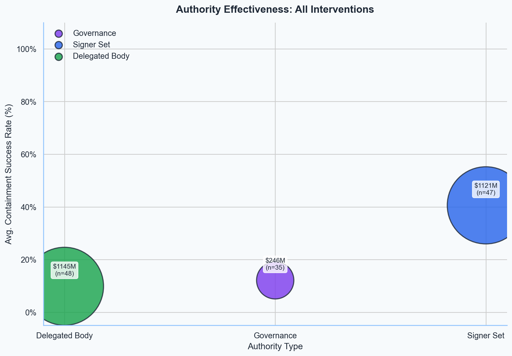
Dominant Authority: Delegated Bodies are the "Heavy Hitters," accounting for over $7.6B in prevented losses. Signer Sets act as "First Responders" for high-frequency hacks, while Governance serves as a "Last Resort" for complex recovery.
28. The LIF Matrix (Scope × Authority)
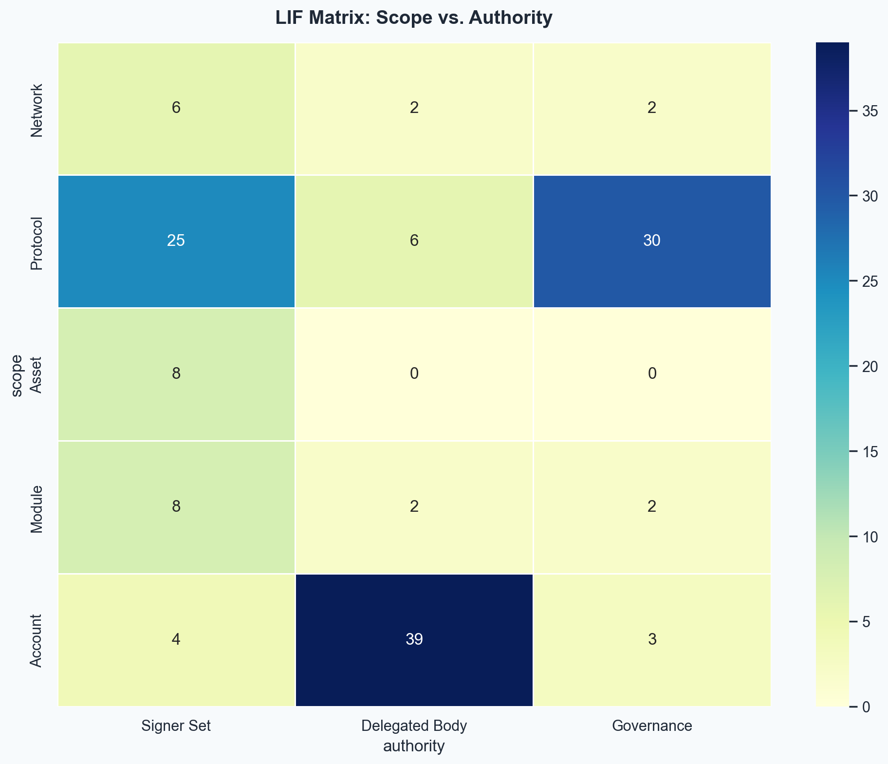
- The "Safety Square": Most common configs are Protocol × Governance (33) and Account × Delegated Body (42).
- Consensus Recovery: The high volume of Account × Delegated Body actions proves that "Social Councils" are the primary mechanism for surgical fund recovery.
- Multisig Role: Signer Sets are active in Protocol-level pauses as an emergency "kill switch".
The Effectiveness Gap
While intervention is happening, it is often inefficient. The data reveals a massive gap between "coverage" (attempting to save) and "effectiveness" (actually saving).
32. Prevented vs Incurred Loss
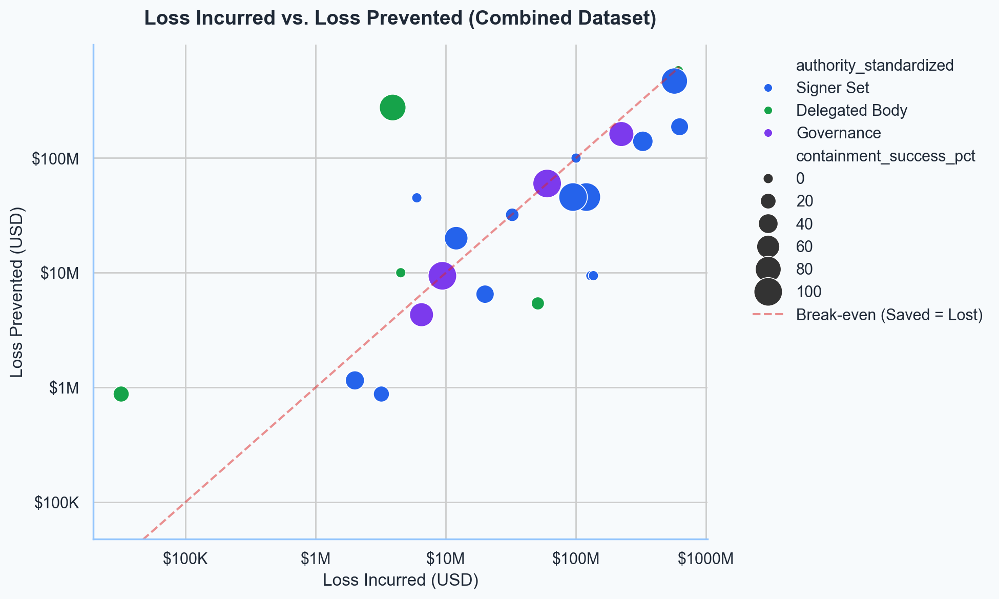
Return on Intervention: Most high-success interventions cluster in the top-left (Low Loss / High Saved). Signer Sets dominate this region as "scalpels". Events below the break-even line are predominantly handled by Governance (slow recovery).
37. Response Time Analysis
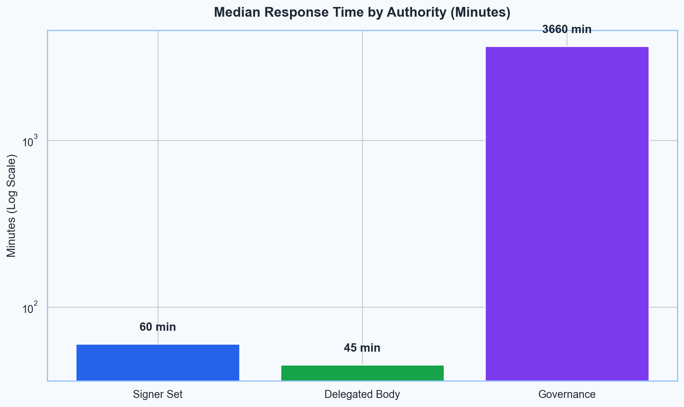
The Speed Gap: Signer Sets (~60 min) and Delegated Bodies (~45 min) exhibit near-instantaneous median response times. Governance (~61 hours) illustrates the massive "coordination tax" of decentralized voting.
38. Success vs Response Time
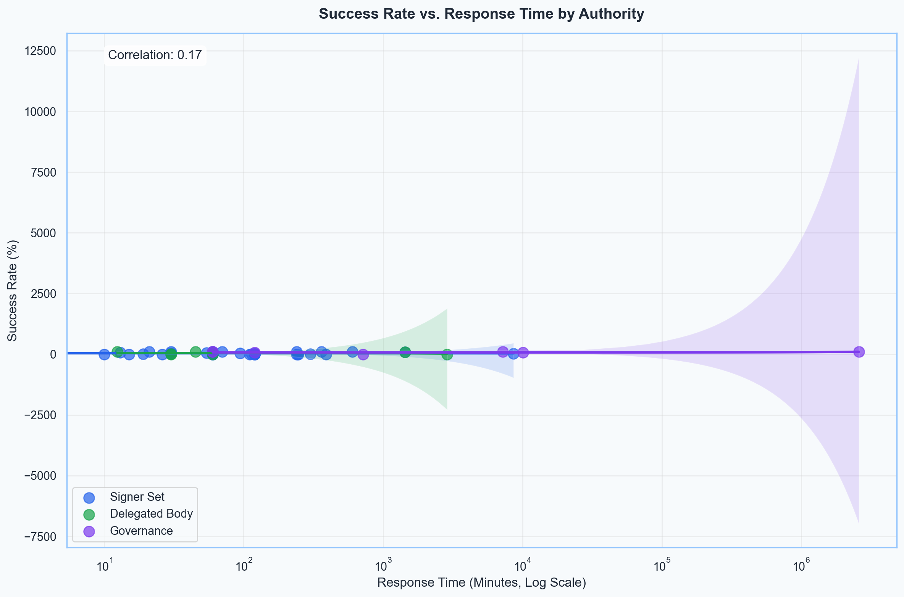
The Speed-Success Decoupling: There is no linear correlation. Governance Paradox: Governance is slowest but maintains ~94% success for the cases it handles (deliberate recovery). Signer Sets succeed by acting fast.
The Framework
Based on the empirical evidence, we propose the "Optimistic Freeze" model: using Signer Sets for precise, reversible containment, followed by Governance for validation.
47. Comprehensive Analysis Matrix
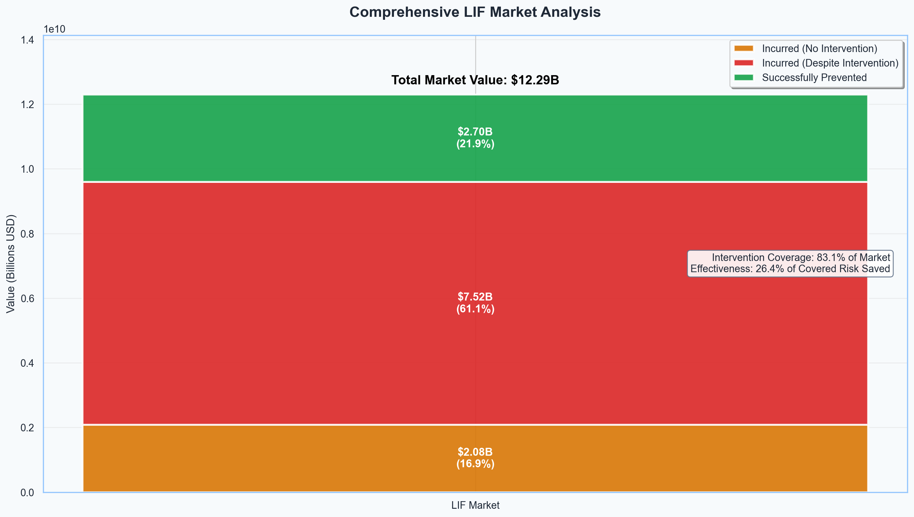
Strategic Imperative: The $7.70B "Incurred Despite Intervention" represents the ROI potential of better tooling. The main challenge is improving success rates on the 80% of cases already covered, not just expanding coverage.
Case Evidence
Deep dive into the 120 cases that track the history of decentralized intervention.
Flow Blockchain
Landmark case where a Delegated Body froze $7B+ in compromised tokens, proving the efficacy of surgical intervention at scale.
Network x Delegated BodyPoly Network
Combination of technical intervention (Tether freeze) and social cooperation led to massive recovery.
Protocol x Signer SetBalancer (Nov 2025)
Emergency multisig pause stopped a logic bug exploitation in real-time. A textbook "Optimistic Freeze".
Account x GovernanceSui / Cetus
Example of Governance acting as a "Last Resort" legitimacy anchor to recover funds after technical containment.
Trend Analysis2024 Crisis Cluster
A year of high-velocity failures that forced the industry to evolve from ad-hoc multisigs to structured councils.